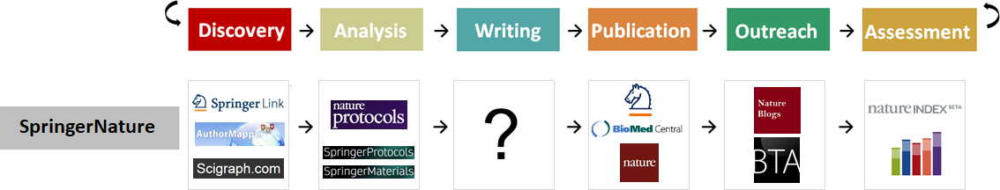
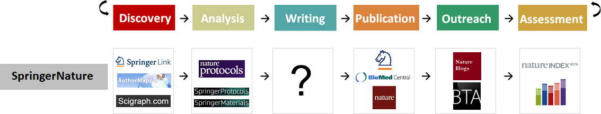

Digital hygiene – how to use free open source software (FOSS) in your studies, research and teaching
Lesson XI - The sorry state of scientific publishing
14 Jan, 2026
Centre for Organismal Studies, Heidelberg University
@jekely@biologists.social

UNESCO Recommendation on Open Science

Current state of scholarly digital infrastructure and knowhow

The problem is the system

- journal publishing system is fundamentally broken
- a legacy system that prevents science from meeting its true potential for society
- about 40,000 journals
- public trust problem
- science publishing must be built anew
- illusion of truth and finality
- artificial scarcity
- narrow formats
- incomplete information
Current system is hugely wasteful
 Robert Maxwell in 1985. Photograph: Terry O’Neill/Hulton/Getty
Robert Maxwell in 1985. Photograph: Terry O’Neill/Hulton/Getty
- worldwide costs $10-25 billion (subscriptions and article processing charges)
- dominated by five large publishing houses: Elsevier, Black & Wiley, Taylor & Francis, Springer Nature and SAGE
- Elsevier has a profit margin around 40 % (higher than Microsoft, Google and Coca Cola)
- about USD 6 billion per year goes to profits = 2 CERNs/year
- APCs can be as high as $10,000
Kleptistan (Binjistan) - II
 
 
- workflow monopoly
- tools to cover the entire academic workflow
- e.g. Elsevier can now cover the entire workflow
- high risk of vendor lock-in
- preconditions for a functioning market exist, but a common standard is missing
Unacceptable practices of data tracking by publishers

- Thomson Reuters and RELX Group (formerly Reed Elsevier) are selling personal information, updated in real time, to ICE’s surveillance program
- “big data policing”
- curated by private “data brokers”
- discover connections between individuals, their addresses, and their property
- surveillance technology = publishers
The task
- emancipation from market control
- strategically withdraw the labour extracted by commercial publishers
- re-direct to those that offer self-governance through the commons

eLife

- funded by HHMI, Wellcome Trust, MPS, K&A Wallenberg Foundation
- https://elifesciences.org/
- The eLife process has five steps:
- Submission or transfer of a preprint from bioRxiv
- Peer review (eLife editors - who are all active researchers - discuss new submissions and decide which will be peer reviewed)
- Publication of Reviewed Preprint
- Publication of revised version
- Publication of Version of Record
- papers published together with eLife Assessment
Preprints

- preprint = author publishes manuscript before peer review
- bioRxiv and medRxiv preprint servers for the life sciences
- critical role in disseminating COVID research during the pandemic